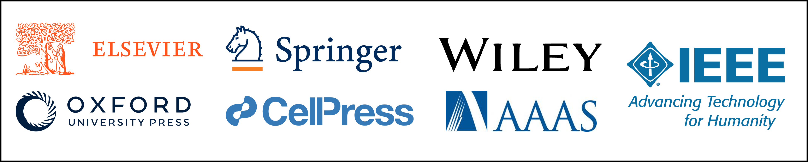
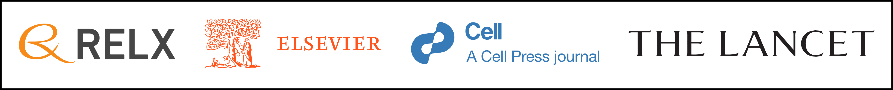
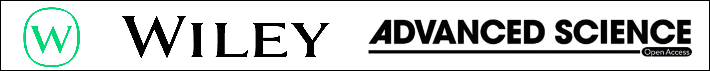

前言
一本期刊、杂志或图书，都要有出版社出版得来，而在科研领域中，这些出版社和学会往往太有名了，我就在这里总结一下吧！

爱思唯尔 - Elsevier

爱思唯尔是励讯集团（RELX Group）的核心业务之一，励迅集团是由英国里德公司和荷兰的爱思唯尔公司在1993年合并而来的，励迅集团的业务除了爱思唯尔出版社以外，风险投资也是公司最为核心的业务。
爱思唯尔在1999年收购了细胞出版社（Cell Press），《细胞》（Cell）就是爱斯唯尔出版社的期刊之一。除此之外，医学顶刊《柳叶刀》（THE LANCET）也是它们家的。
施普林格 - Springer
施普林格本身就是一个集团，其由 BC 和霍尔茨布林克出版集团控股。在2015年收购了自然出版社，现在叫做施普林格·自然。显而易见的是，《自然》（Nature）现在是该集团下的期刊之一。
约翰威立 - John Wiley & Sons

约翰威立出版社本身就是一个集团，其背后再没有母公司了。约翰威立集团业务较为单一，就是一个出版社。其出版生命科学领域期刊著名的有 Advanced Science。